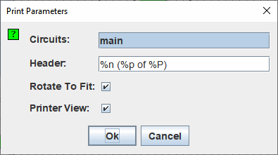

打印
当您选择 | 打印... | 时，Logisim 会显示一个对话框用于配置打印内容。

打印配置
- 电路： 一个列表，您可以选择一个或多个电路进行打印。（空电路不会显示为选项。）Logisim 每页打印一个电路。如果电路相对于页面太大，图像将被缩小以适合页面。
-
页眉： 应在每页顶部居中显示的文本。文本中可以使用以下替换项。
%n 页面上的电路名称 %p 页码 %P 总页数 %% 一个百分号（'%'） - 旋转以适合： 如果选中，则当电路太大无法在页面上完整显示且旋转 90 度后无需缩小太多时，Logisim 会将每个电路旋转 90 度。
- 打印视图：是否在打印电路时使用“打印视图”。此选项也可在导出图像时配置，会改变工作区中的显示。
单击确定后，Logisim 将在打印电路之前显示标准页面设置对话框。